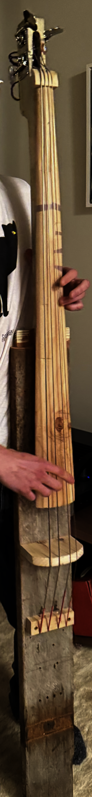

A four-string upright bass built from scratch out of reclaimed lumber — neck, pegbox, and body carved and assembled by hand, strung and tuned to play.


Overview
Built as a personal project outside of coursework, this bass is shaped from reclaimed wood rather than a kit — the neck and fingerboard planed and carved by hand, the pegbox fitted with real tuning machines, and four strings run down to a plank body. It plays like a proper upright bass, just built from nothing but raw lumber and hand tools.